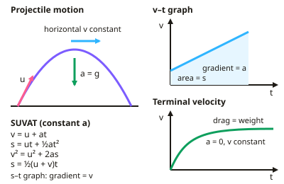

A-level Physics Year 12 · Topic 5
Motion, momentum and energy
Motion, momentum and energy builds the mechanics you need for the rest of A-level Physics.
We will use the SUVAT equations and motion graphs, solve projectile problems, and apply Newton's laws.
Then we study momentum, impulse and collisions, work, power and conservation of energy, and the practical on measuring g by free fall.
- 5 subtopics
- 301 questions
- Free: 5.1 notes and 10 questions
In this topic
- 5.1Motion and projectilesFree below · 61 questions
- 5.2Newton's laws, momentum, work and powerOpen in Full Marks · 59 questions
- 5.3Practical: determining g by free fallOpen in Full Marks · 34 questions
- 5.4Impulse, force–time graphs, elastic and inelastic collisions and explosionsOpen in Full Marks · 75 questions
- 5.5Conservation of energy, efficiency and energy transfersOpen in Full Marks · 72 questions
5.1 · Free notes
Motion and projectiles

Key points
- SUVAT equations apply for uniform acceleration: v = u + at; s = ut + ½at²; v² = u² + 2as; s = ((u + v) ÷ 2)t.
- On displacement-time graphs, gradient = velocity; on velocity-time graphs, gradient = acceleration and area = displacement.
- Projectile motion: horizontal and vertical motion are independent. Horizontal velocity is constant (ignoring air resistance) while vertical motion has acceleration g downwards.
- Terminal velocity occurs when the drag force equals the weight, so the resultant force and acceleration are zero.
In more detail
- Worked projectile: a ball is kicked horizontally at 12 m s⁻¹ from a 20 m cliff → t = √(2 × 20 ÷ 9.81) = 2.02 s → horizontal range = 12 × 2.02 = 24 m.
- Worked angled launch: 20 m s⁻¹ at 30° → uₓ = 17.3 m s⁻¹, u_y = 10.0 m s⁻¹; time of flight = 2 × 10.0 ÷ 9.81 = 2.04 s; range = 35 m.
- Worked SUVAT: a car accelerates from 8.0 to 20 m s⁻¹ in 6.0 s → a = 2.0 m s⁻²; s = (8.0 + 20) ÷ 2 × 6.0 = 84 m.
- Area and gradient: the area under an a–t graph gives change in velocity; the gradient of a v–t graph gives acceleration.
Practice
Motion and projectiles: 10 questions
Pick an answer to check it, or open the answer for the explanation.
1. An object accelerates from rest at 4 m/s² for 3 s. What is its final velocity?
- 1.3 m/s
- 7 m/s
- 12 m/s
- 36 m/s
Show answer
C: 12 m/s. v = u + at = 0 + 4 × 3 = 12 m/s.
2. What does the gradient of a velocity-time graph give?
- Displacement
- Acceleration
- Force
- Momentum
Show answer
B: Acceleration. Change in velocity divided by time is acceleration.
3. For a projectile with no air resistance, the horizontal velocity:
- Increases
- Decreases
- Stays constant
- Becomes zero
Show answer
C: Stays constant. No horizontal force acts, so it remains constant.
4. What happens at terminal velocity?
- Weight exceeds drag
- Drag equals weight, so acceleration is zero
- Acceleration is maximum
- Velocity is zero
Show answer
B: Drag equals weight, so acceleration is zero. With no resultant force, velocity stays constant.
5. An object falls from rest for 2 s. How far does it fall? (g = 9.81 m/s²)
- 9.81 m
- 19.6 m
- 4.9 m
- 39.2 m
Show answer
B: 19.6 m. s = ut + ½at² = 0 + ½ × 9.81 × 4 ≈ 19.6 m.
6. An object is thrown horizontally from a height. Which statement is correct, ignoring air resistance?
- It lands directly below the throw point
- Its horizontal velocity stays constant while it accelerates downwards
- It falls straight down
- Its vertical velocity stays constant
Show answer
B: Its horizontal velocity stays constant while it accelerates downwards. Horizontal and vertical motions are independent.
7. A car decelerates uniformly from 30 m/s to rest in 6.0 s. What distance does it travel while stopping?
- 5.0 m
- 90 m
- 45 m
- 180 m
Show answer
B: 90 m. Using s = ((u + v) ÷ 2)t = (30 + 0) ÷ 2 × 6.0 = 90 m. 180 m comes from using u × t, which assumes no deceleration.
8. A stone is thrown vertically upwards at 15 m/s. Ignoring air resistance, what maximum height does it reach? (g = 9.81 m/s²)
- 11.5 m
- 1.53 m
- 23.0 m
- 7.65 m
Show answer
A: 11.5 m. At the top v = 0, so v² = u² + 2as gives 0 = 15² − 2(9.81)s, so s = 225 ÷ 19.62 = 11.5 m.
9. A straight-line displacement–time graph passes through (0 s, 2.0 m) and (4.0 s, 14 m). What is the velocity?
- 3.5 m/s
- 3.0 m/s
- 12 m/s
- 4.0 m/s
Show answer
B: 3.0 m/s. The gradient gives velocity: (14 − 2.0) ÷ 4.0 = 3.0 m/s. Using 14 ÷ 4.0 ignores the starting displacement.
10. A velocity–time graph rises uniformly from 0 to 20 m/s in 5.0 s, then stays at 20 m/s for 10 s. What is the total displacement?
- 350 m
- 300 m
- 250 m
- 200 m
Show answer
C: 250 m. Area under the graph: triangle ½ × 5.0 × 20 = 50 m, plus rectangle 20 × 10 = 200 m, giving 250 m. 300 m wrongly uses 20 m/s for the whole 15 s.
Keep going in Full Marks
Full Marks has 61 questions on Motion and projectiles (51 more than here), set out in practice levels. You also get notes and 3D models for all 5 subtopics of Motion, momentum and energy, plus games, timed exams and past papers.